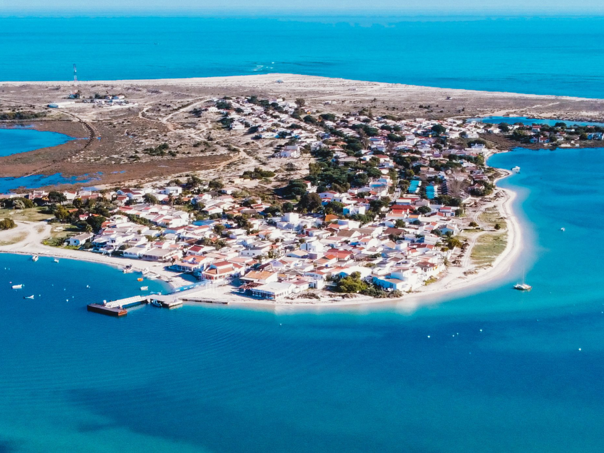
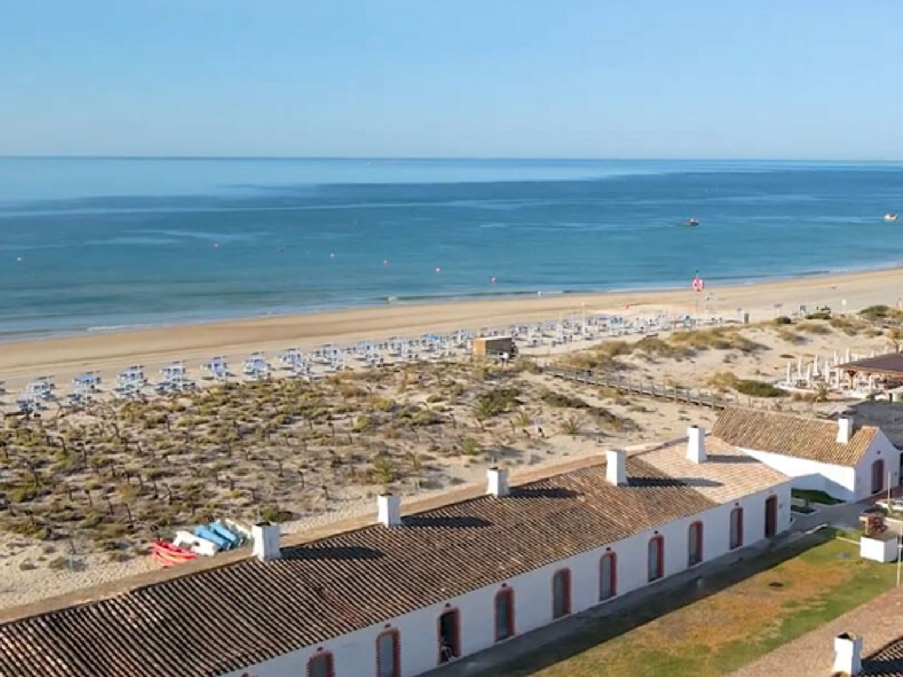
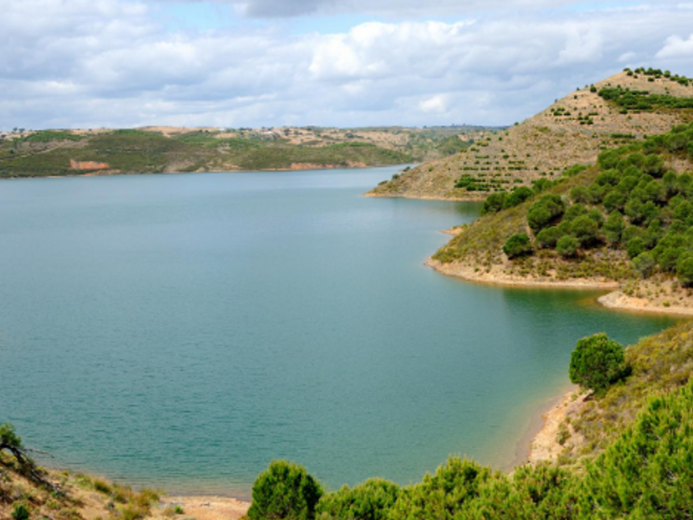
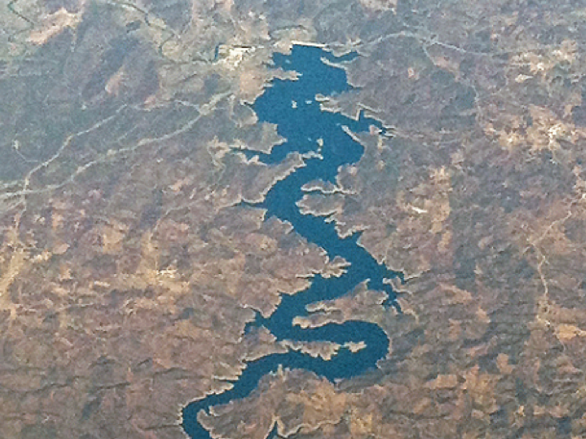
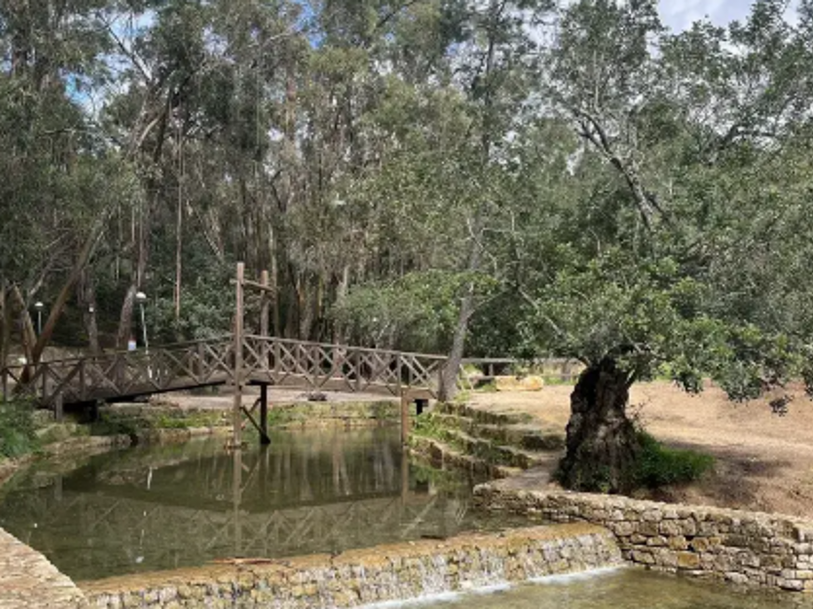
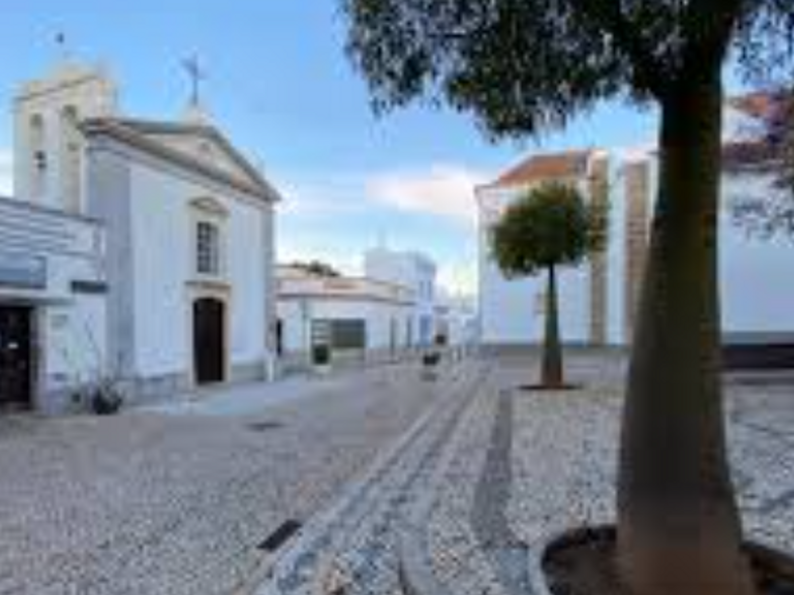
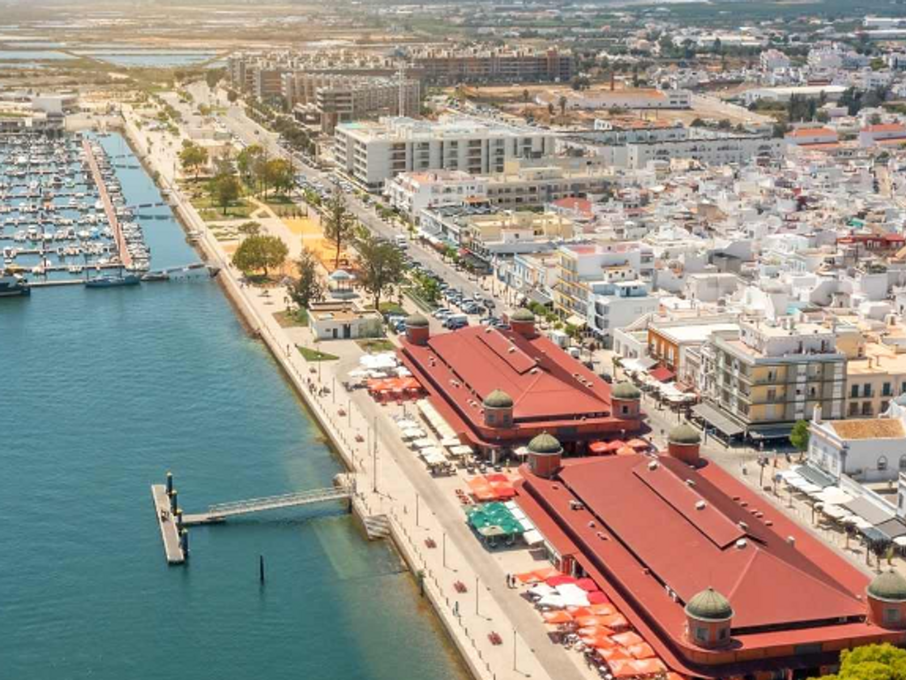

Home/Our Location
Our Location
ADV ZEN is based just outside Moncarapacho, in the eastern Algarve region of southern Portugal. We’re about 25 minutes from Faro Airport, tucked between the hills and the sea — far enough from the busy towns to be peaceful, but close enough to get to the beach, local cafés, or the airport without hassle.
The area is quiet, rural, and full of character. Olive trees, dirt roads, small farms, open skies. You’ll hear birds more often than cars. At night, you’ll see stars.
We’re around 10 minutes from the coast, so it’s easy to head to the beach after a ride or go for a swim before breakfast. The nearest towns — Moncarapacho, Olhão, and Fuseta — offer local food, markets, and easy-going Portuguese life.
Our property is simple and relaxed. There’s space to stay, space to park, and space to breathe. From here, you can head into the hills, hit the trails, or just enjoy the stillness.
This is where we live, and where we host small groups of people looking for something similar: good riding, fresh air, and time that feels a little slower.
Open in Google Maps







You don’t have to go far to find something special. The entire Algarve coastline — over 150 km of beaches, cliffs, islands, and coves — is right here, and all of it is within easy reach from our place. Head north and you’ve got the Serra do Caldeirão mountains, with quiet roads, forest trails, and hiking routes that wind through the hills. Whether you’re into the ocean, the mountains, or something in between, it’s all close by.
What’s below is just a small list of places nearby — beaches, bars, local towns, nature spots, and trails worth exploring at your own pace.
Praia da Fuseta
A quiet, sandy beach just 10 minutes away. You can swim, relax, or take the ferry to Fuseta Island. Perfect for low-key beach days.
Ilha da Armona
A peaceful island with no cars — just sand, sea, and wooden walkways. Ferries run from Olhão and it’s great for a day of wandering and swimming.
Praia do Barril
A long stretch of beach with calm water and the iconic anchor graveyard. Easy to reach via a short walk or the little tourist train.
Barragem do Beliche
A scenic reservoir surrounded by hills and quiet dirt tracks. Ideal for off-road riders, nature lovers, or a peaceful break with a view.
Barragem de Odeleite
Called the “blue dragon” because of its shape from above. A great ride and a stunning spot for photos or drone footage.
Fonte Férrea
A shaded natural spring and picnic area in the hills behind São Brás. Good for walking, cooling off, or a quiet afternoon under the trees.
Moncarapacho
Our local village. Small, calm, and authentic, with cafés, a bakery, and a local market. Just a few minutes down the road.
Olhão
A lively fishing town with great seafood, an open-air market, and ferries to the islands. It still feels local, even in summer.
Fuseta
A beach town with calm water, easy food options, and a relaxed boardwalk. Great for a swim, snack, and sunset.
São Brás de Alportel
A hill town with access to scenic trails and backcountry roads. Less touristy than the coast, and a great base for inland rides.